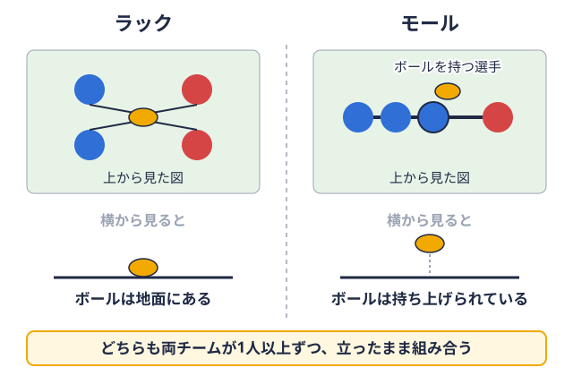
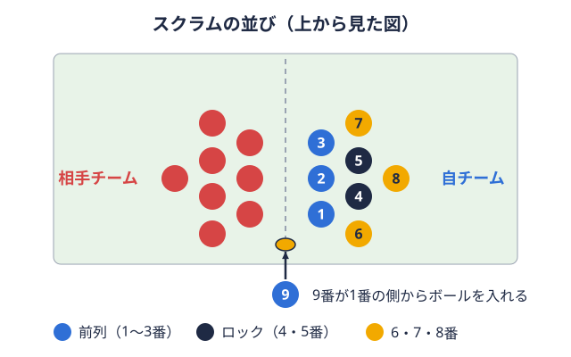
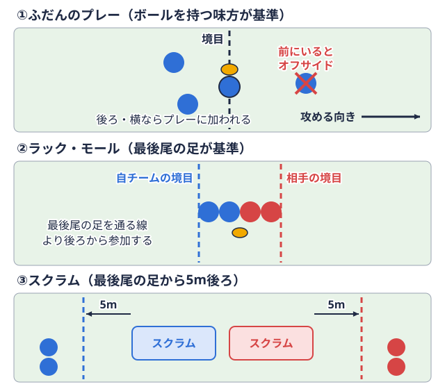
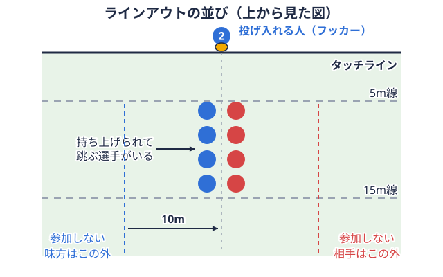
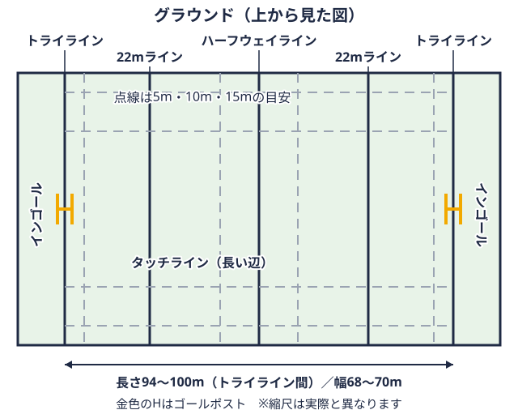
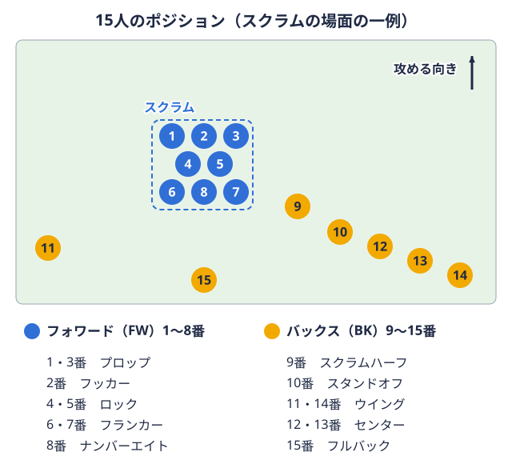

技術 2026-11-04
ラグビー戦術用語50選｜大学部員向けに攻撃・防御・局面別で解説
ミーティングで「ポッドで回して、ゲインラインを切ろう」と言われたものの、何を指しているのか分からないまま頷いてしまった。映像分析の場で、コーチの言う「ピラー」や「ドミナントキャリー」がどの選手のどの動きなのか、聞き返せなかった。そんな場面は、大学で競技を始めた人にも、高校から続けてきた人にも起こりえます。戦術用語は英語由来の語が多く、チームや指導者によって使い方が少しずつ違うためです。
この記事では、大学のチーム練習やミーティングで使われやすい戦術用語50語を、攻撃・ハンドリング・防御・ブレイクダウンタックルのあと、地面のボールをめぐって両チームが争う場面を指す現場の呼び名。   
掲載する語は、編集部が選びました。選定の基準は、大学のチーム練習やミーティングで使われやすい戦術用語のうち、2026年版競技規則と、World Rugby およびラグビーワールドカップ公式の解説で意味を確認できる範囲です。特定のチームや選手の戦術を評価する記事ではありません。
この用語集の見方｜「規則にある言葉」と「現場の言葉」を分ける
結論から言うと、規則に定義がある語は意味が一つに決まり、現場用語はチームによって指す範囲が違うことがあります。
日本ラグビーフットボール協会が公開している2026年版競技規則（日本語版）には「定義」の章があり、ハンドオフ、ジャッカラー、ロイタリング、マーク、クイックスローなどの語が定義されています。たとえばノックオンは、2026年版の定義では「ノックフォワード（以前のノックオン）」と表記されています（出典: 日本ラグビーフットボール協会 競技規則）。一方で「ポッド」「シェイプ」「ピラー」のような語は競技規則に定義がなく、チームにより呼び方が異なる場合があります。同じ言葉でも、あるチームでは3人組、別のチームでは役割名を指すこともあるため、自分のチームでの意味はコーチや先輩に確認しておくのが安全です。
| 区分 | 語数 | 主に使う場面 |
|---|---|---|
| A 攻撃の考え方と陣形 | 10語 | 攻撃の組み立て、ミーティング |
| B 攻撃のプレーとハンドリング | 9語 | パス・ランの練習、映像分析 |
| C 防御 | 9語 | ディフェンス練習、ライン調整 |
| D ブレイクダウン | 7語 | 接点の攻防、反則の確認 |
| E セットプレー | 7語 | スクラム試合が止まったあとの再開方法。両チーム8人ずつが体を組み合わせて向かい合い、間に入れたボールを足で奪い合う。用語辞典で見る・ラインアウトボールが横のライン（タッチライン）の外に出たあとの再開方法。2列に並び、投げ入れたボールを取り合う。  用語辞典で見る |
| F キックとエリア | 8語 | キック戦術、陣地の取り合い |
攻撃の考え方と陣形の用語（10語）
攻撃の用語は、「ゲインラインを越えて、防御が整う前に次の攻撃へつなぐ」という考え方を軸にすると整理しやすくなります。World Rugby は攻撃の原則として、ボールを保持して前進し、攻撃を継続することを挙げています（出典: World Rugby The principles of attack and defence）。
- ゲインライン（gain line）【現場】: 直前のラック・モール・スクラム・ラインアウトの位置から、タッチライングラウンドの長い辺に引かれた線。ボールや選手がこの線の外に出ると、プレーが止まる。

用語辞典で見ると平行に引いた想像上の線です。これを越えて前に出ることを「ゲインラインを切る」と言います（出典: Rugby World Cup 公式 Through or around?）。 - フェーズ（phase）【規則+現場】: 規則上の「プレーのフェーズ」は、スクラム、ラインアウト、ラック、モールを指します。現場では、タックルボールを持つ相手をつかんで地面に倒すプレー。倒したあとは、すぐにボールから離れなければならない。用語辞典で見るからラックへ続くたびに攻撃の区切りを数える意味でも使われ、セットプレー直後の攻撃は一般的にファーストフェーズと呼ばれます。
- フロントフットボール（front foot ball）【現場】: 前に出た状態で素早く出せるボールのことです。防御が整う前に攻められるため、攻撃側が欲しがるボールとして語られます（出典: Rugby World What is the gainline in rugby?）。
- ラインブレイク（line break）【現場】: 防御ラインを突破することです。突破した後に、サポートの選手がどれだけつなげるかが次の話題になります。
- オーバーラップ（数的優位）【現場】: 攻撃側の人数が防御側を上回っている状態です。パスを回して外側に人数をかけたときに生まれやすい状況として使われます。
- ミスマッチ（mismatch）【現場】: 体格やスピードに差がある組み合わせを作ることです。たとえば、フォワード背番号1〜8番の8人。スクラムを組み、体をぶつけてボールを確保するのが主な役目。

用語辞典で見るの選手にバックス背番号9〜15番の7人。ボールを受けて走り、パスやキックで攻めるのが主な役目。用語辞典で見るの選手を当てる形が例に挙がります。 - ポッド（pod）【現場】: フォワードを3人前後の小グループに分けて配置し、連続攻撃を担わせる形です（出典: Sportplan 1-3-3-1 Attacking Shape、Rugby Coach Weekly）。1グループの人数や呼び方はチームにより異なる場合があります。
- シェイプ（shape、1-3-3-1など）【現場】: チームとしての攻撃の並び方の型です。1-3-3-1のような数字は、タッチラインからタッチラインへ向かって、フォワードを何人ずつ配置するかを表す書き方として紹介されています（出典: Sportplan）。
- ファーストレシーバー／セカンドレシーバー【現場】: 9番からのパスを最初に受ける選手と、その次に受ける選手です。ポジションの名前ではなく、その場面での役割を指します。
- ブラインドサイド／オープンサイド【現場】: ラックやスクラムを境にして、タッチラインに近い狭い側と、広く空いた側を指します（出典: RNZ Beginners guide to rugby jargon）。
攻撃のプレーとハンドリングの用語（9語）
ハンドリング用語の多くは、防御の目線をずらして、数的優位やミスマッチを作るための手段として説明できます。関連するポジションの動きは、スタンドオフの判断力の記事とセンターの役割の記事で扱っています。
- オフロード（offload）【現場】: タックルを受けながら、倒れる前にボールをつなぐパスです。成功すると、防御が組み直す前に攻撃が続きます。
- ダミー（ダミーパス／ダミーランナー）【現場】: パスをするふり、またはボールをもらうふりをして、防御を引きつけるプレーです（出典: RNZ）。
- ループ（loop）【現場】: パスをした選手が、受け手の外側へ回り込んで再びボールをもらうプレーです。外側に人数を足す手段として使われます。
- スイッチ（クロス）【現場】: 走る方向を交差させて、ボールを受け渡すプレーです。防御側がどちらを追うかを迷う場面を作ることが狙いです。
- 飛ばしパス（ミスパス）【現場】: 隣の選手を飛ばして、さらに外の選手へ通すパスです。「ミス」は失敗という意味ではなく、飛ばすことを指します。
- クラッシュボール（crash ball）【現場】: 突破よりも、前進と接点の確保を狙って、まっすぐ当たるプレーです。
- ピック・アンド・ゴー（pick and go）【現場】: ラックの後方にあるボールを拾い、そのまま持ち込むプレーです（出典: RNZ）。近場で前進を重ねたいときに使われると言われます。
- ハンドオフ（hand-off）【規則】: ボールキャリアーが手のひらで相手を払いのける、認められた行為です。2026年版競技規則の定義にあります（出典: 日本協会 2026年版競技規則（PDF））。
- ドミナントキャリー（dominant carry）【現場】: 接点で前に出て、最初の接触点より先で倒されるキャリーです（出典: Rugby World Cup 公式）。ボールを持つ選手の体の強さだけでなく、周りのサポートも含めて語られます。
防御の用語（9語）
防御の用語は、相手から時間とスペースを奪い、ボールを奪い返すための役割と動き方を表します。World Rugby も、防御の原則として時間とスペースを奪うことと、ボールの争奪を挙げています（出典: World Rugby The principles of attack and defence）。
- ドリフト（drift）【現場】: 防御ラインが外側へ流れながら対応する守り方です。詳しくはディフェンスラインの記事をご覧ください。
- ブリッツ（blitz、ラッシュディフェンス）【現場】: 防御ラインが一斉に前へ出て、攻撃側の時間とスペースを奪う守り方です。こちらも上記の記事で扱っています。
- ドミナントタックル（dominant tackle）【現場】: タックラーがボールキャリアーを後ろへ押し戻すタックルです（出典: Rugby World Cup 公式）。
- ダブルタックル【現場】: 2人で同時に、異なる高さで当たるタックルです。頭同士の接触を避けるための声かけとタイミングが前提とされています（出典: World Rugby Multi-player tackles）。
- チョークタックル（スタンドアップタックル）【現場】: 相手を立たせたまま止めて、倒させない、オフロードさせないことを狙うタックルです（出典: World Rugby Multi-player tackles の stand-up tackle）。安全面では、頭や首への接触を避ける意識が欠かせません。タックルの高さに関する最新の扱いは、2026年のルール改正の記事で確認できます。
- ジャッカラー／スティーラー（ジャッカル）【規則】: タックルに最初に到着した、タックラーの味方の選手です。立ったまま、関与していた場合は明らかにボールキャリアーを離してから、ボールを争奪する必要があります（出典: 2026年版競技規則の定義）。
- ガード（ピラー）【現場】: ラックの両脇に立って、近場への持ち込みを止める防御の選手です（出典: RNZ の Guard-dog の説明）。呼び方はチームにより異なる場合があります。
- ターンオーバー（turnover）【現場】: 防御側が、ボールの保持を奪い返すことです（出典: World Rugby の regain possession の記述）。
- ロイタリング（loitering）【規則】: オフサイドの位置に残り続けることです。相手のプレーを妨げると、罰の対象になりうる行為として2026年版競技規則の定義に載っています。
ブレイクダウンの用語（7語）
ブレイクダウンには、規則で決まっている部分（ユーズイットの5秒、最後尾の足のオフサイドラインオフサイドにならずにプレーに加われる境目の線。場面ごとに位置が決まっている。用語辞典で見る、ジャッカラーの条件）と、現場の役割名（クリーナーなど）が混在します。まず規則側を押さえると、ミーティングの話が整理しやすくなります。練習法はブレイクダウンとジャッカルの記事とフランカーの記事で解説しています。
- ブレイクダウン（breakdown）【現場】: ボールキャリアーが地面に倒れた後の攻防局面です（出典: World Rugby Breakdown explained）。ラックの基礎説明は用語集の記事にあります。
- クリーナー（オーバー）【現場】: 攻撃側のサポートとしてラックに入り、相手を排除してボールを確保する選手です。「クリーンアウト」という言い方もされます。
- カウンターラック【現場】: 防御側がラックで押し返して、ボールを奪いにいくことです。
- ユーズイット（use it）【規則】: ラック・モール・スクラムでボールが獲得され、プレー可能になったときのレフリーのコールです。ラックでは、コールの後5秒以内にボールを出さないとスクラムになります（出典: 2026年版競技規則 第15条、World Rugby 第15条ラック）。
- ラックのオフサイドライン（最後尾の足）【規則】: 各チームのラック参加者の、最後尾の足を通る、トライラインと平行な線です（出典: 2026年版競技規則 第15条）。
- ノットリリースザボール【規則】: タックルされた選手がボールを離さない反則です（出典: 日本協会 ラグビー基本用語解説）。
- ノットロールアウェイ【規則】: タックラーがボールから離れない反則です（出典: 日本協会 ラグビー基本用語解説）。
セットプレーの用語（7語）
スクラムとラインアウトは、規則上「セットピース」と呼ばれます。ブレーキフットやクイックスローのように、規則で動き方が決まっている語が多いのが特徴です。関連する記事として、モールの記事、スクラムの記事、フッカーのスローイングの記事、ロックの記事があります。
- ラインアウトモール（ドライビングモール）【現場】: ラインアウトで捕球した後にモールを組んで前進する攻撃です。モールの規則の扱いは、2026年6月の適用ガイドラインを含めて上記のモールの記事で確認できます。
- レシーバー（receiver）【規則】: ラインアウトから、ノックまたはパスバックされたボールを受ける位置の選手です（出典: 2026年版競技規則の定義、第18条）。
- クイックスロー（quick throw）【規則】: ラインアウトが形成される前に行う投入です。投入するのは、本来ラインアウトで投入するはずだったチームです（出典: 2026年版競技規則の定義、World Rugby 第18条）。
- ダミージャンプ（ダミーリフト）【現場】: 跳ぶふりや持ち上げるふりをして、相手のジャンパーラインアウトで味方に持ち上げられて跳び、投げ入れられたボールを取る選手。用語辞典で見るを惑わせる動きです。
- ルースヘッド／タイトヘッド【規則】: スクラム最前列の左右のプロップ1番と3番のポジション。スクラムの最前列の左右で組み、チームの押す力を支える。用語辞典で見るの呼び分けです。語自体は2026年版競技規則の第19条（スクラムの組み方）に登場します。「1番がルースヘッド、3番がタイトヘッド」という対応は、背番号の慣例として覚えられているものです。
- ブレーキフット（brake foot）【規則】: フッカー2番のポジション。スクラムの中央でボールを足でかき出し、ラインアウトでは投げ入れ役も務める。用語辞典で見るがトンネルの中央に、片足を前に置く動作です。クラウチとバインド腕を使って、味方や相手の体につかまって組むこと。スクラムやラック、モールで必要になる。用語辞典で見るの間は置き続け、セットした後、ボールを当てる前に引きます（出典: 2026年版競技規則の定義。2026年7月から正式な規則）。
- セットピース（set piece）【規則】: スクラムとラインアウトのことです。日本の現場では「セットプレー」とも呼ばれます。
キックとエリアの用語（8語）
キックの用語は、「陣地を取る」「ボールを取り返す」「速く再開する」のどれを狙うかで分けると覚えやすくなります。キックの種類と練習法は、キックの種類と練習法の記事で詳しく解説しています。
- ボックスキック（box kick）【現場】: ラックやスクラムの後ろから、9番が上げる高いキックです。味方が追って、空中で競り合う形が一般的です（出典: RNZ）。
- ハイパント（アップ・アンド・アンダー）【現場】: 味方が追いつける高さと滞空時間を持たせたキックです（出典: RNZ）。
- グラバーキック（grubber kick）【現場】: 地面を転がす低いキックです（出典: RNZ）。
- キックチェイス（kick chase）【現場】: 蹴った後に、味方がラインをそろえて追う動きです。相手の反撃を抑える役割があります。
- 50:22【規則】: 自陣側から蹴ったボールが、相手の22m区域内でタッチに出た場合に関わる規則です。成立するための細かい条件は、World Rugby Laws Definitionsと上記のキックの記事で確認してください。
- マーク（mark）【規則】: 自陣22m区域内またはインゴール得点ライン（トライライン）の奥にあるエリア。ここでボールを地面につけるとトライになる。用語辞典で見るで、相手のキックを直接捕って「マーク」と叫び、フリーキックを得ることです（出典: 2026年版競技規則の定義）。
- カウンターアタック（counter attack）【現場】: 相手のキックを捕った側が、防御が整う前に攻め返すことです。
- ペナルティ反則への罰。反則を受けたチームがその場から再開でき、ゴールを狙って成功すれば3点が入る。
 用語辞典で見るの選択【規則+現場】: ペナルティを得たチームは、スクラムを選ぶことができます（出典: 2026年版競技規則 第20条）。タッチに蹴り出した場合は、蹴ったチームがラインアウトの投入権を持ちます（第18条）。ゴールを狙うことを「ショット」、タップキックで速く再開することを「クイックタップ」と呼ぶのは、現場の呼び方です。
用語辞典で見るの選択【規則+現場】: ペナルティを得たチームは、スクラムを選ぶことができます（出典: 2026年版競技規則 第20条）。タッチに蹴り出した場合は、蹴ったチームがラインアウトの投入権を持ちます（第18条）。ゴールを狙うことを「ショット」、タップキックで速く再開することを「クイックタップ」と呼ぶのは、現場の呼び方です。
用語を覚えたら、自分のリーグの試合で確かめる
用語は実際の試合と結び付けると定着しやすくなります。所属リーグの日程、順位、記録から、見返す試合を選ぶ方法があります。
当サイトが持っているデータは、試合結果、得点、順位などです。記録室では最多合計得点試合や最大得点差試合などを見られますが、ラインブレイク数のようなプレー別の統計は持っていません。そのうえで、たとえば得点差の小さい試合を選び、映像でブレイクダウンの攻防やキックの選択を見返す、という使い方ができます。試合の流れと、この記事の用語を照らし合わせるだけでも、ミーティングで出る言葉のイメージはつかみやすくなる場合があります。
まとめ
規則に定義がある語は2026年版競技規則で確認し、現場用語はチーム内で意味をそろえておくと、ミーティングの指示が伝わりやすくなります。
50語を局面別に見てきましたが、現場用語は指導者やチームによって指す範囲が変わる場合があります。この記事の説明は、あくまで一般的な使われ方の目安です。迷ったときは、練習の場で「今の言葉は、こういう動きのことですか」と確認する習慣が、チーム内の意思疎通を助けます。学生コーチやアナリストとして、部内で用語の意味をそろえる立場の人は、学生コーチの役割の記事もあわせてご覧ください。
出典
- 日本ラグビーフットボール協会 競技規則
- 日本協会 2026年版競技規則（日本語PDF）
- 日本協会 ラグビー基本用語解説
- World Rugby Laws Definitions
- World Rugby 第15条 ラック
- World Rugby 第18条 タッチ、クイックスロー、ラインアウト
- World Rugby The principles of attack and defence
- World Rugby Breakdown explained
- World Rugby Multi-player tackles
- Rugby World Cup 公式 Through or around? The art of getting over the gain line（2019-09-20）
- Rugby World What is the gainline in rugby?（2023-07-04）
- RNZ RWC: Beginners guide to rugby jargon（2023-09-09）
- Sportplan The 1-3-3-1 Attacking Shape
- Rugby Coach Weekly Essentials for using attacking pods
この部活・競技を応援したい方へ
取材してほしい部活を募集中
オフシーズン・引退後に、長期インターンという選択
部活で培った力を実務で試す。16タイプ診断（30秒）で合う企業がわかります。